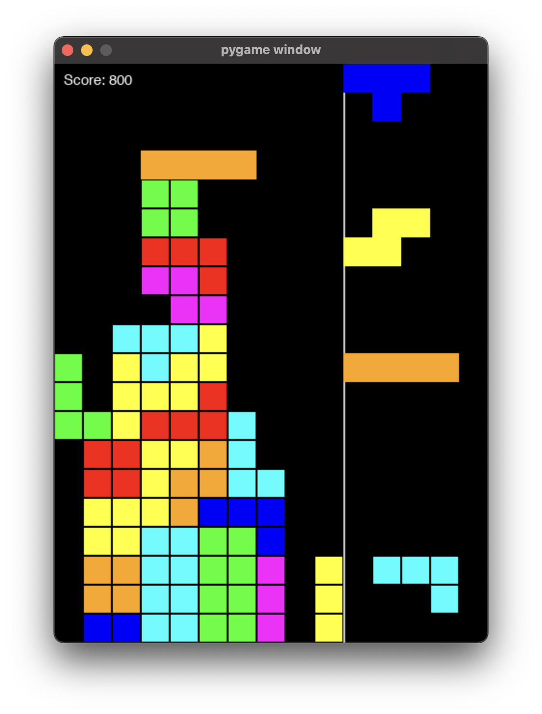
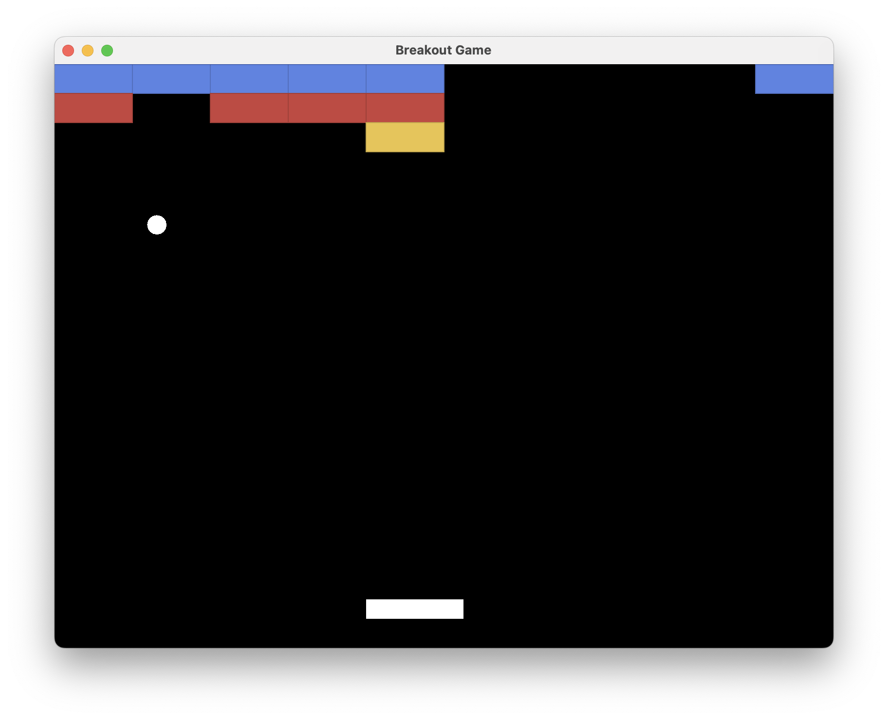
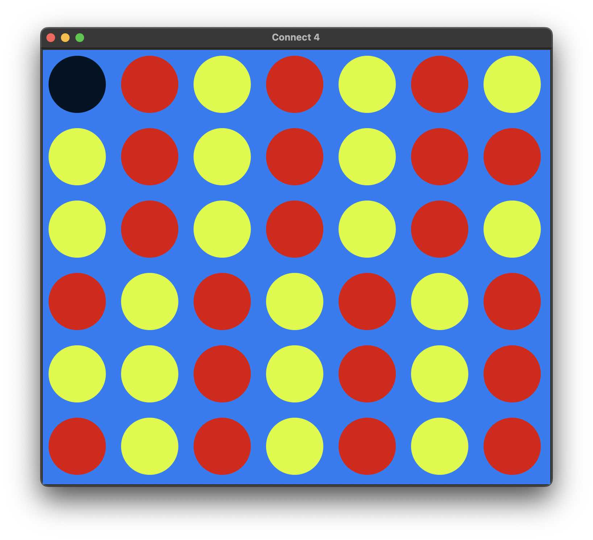
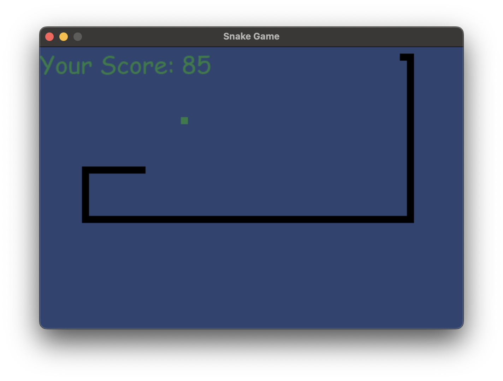
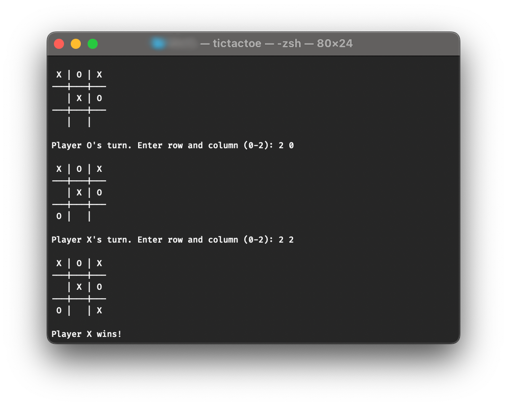
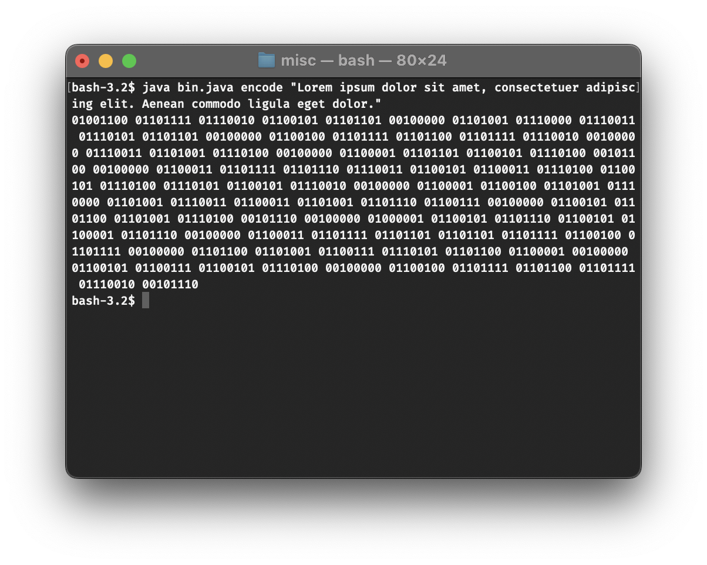
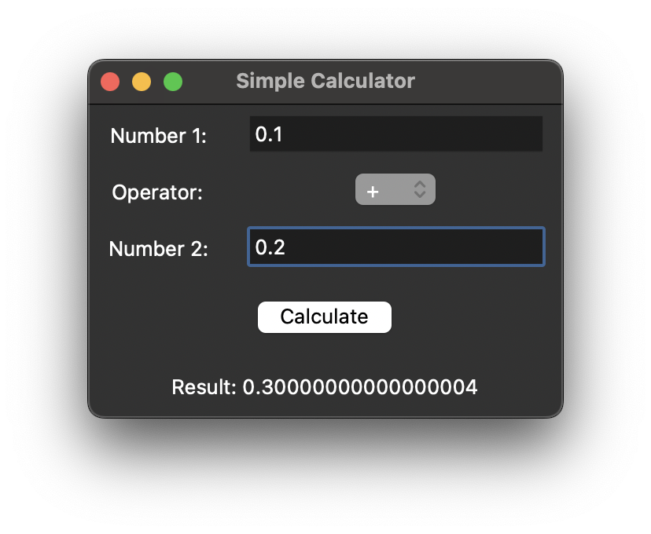

January 31, 2025
Tetris
in Python

Tetris is a classic puzzle game where players manipulate falling geometric shapes, called Tetrominoes, to create complete horizontal lines on a grid. Each Tetromino is made of four squares arranged in different configurations, and players can rotate and move them to fit together efficiently. When a line is completed, it disappears, making room for more pieces and preventing the stack from reaching the top—if it does, the game ends. As the game progresses, the speed increases, demanding faster decision-making and precision. Tetris is known for its simple yet addictive gameplay, requiring spatial awareness, strategy, and quick reflexes.
January 18,2025
Breakout
in Java

Breakout is a classic arcade game where players control a paddle at the bottom of the screen to bounce a ball upward, breaking rows of bricks. The goal is to clear all the bricks without letting the ball fall past the paddle. Players move the paddle side to side to keep the ball in play, and as the game progresses, the ball speeds up, making it more challenging. Some versions include power-ups, different brick types, and multiple balls. The game requires precision, timing, and strategy to succeed.
January 12, 2025
Connect 4
in Python

Connect 4 is a two-player strategy game where players take turns dropping colored discs into a 7-column, 6-row grid. The goal is to connect four discs in a row—vertically, horizontally, or diagonally—while blocking the opponent. Discs fall to the lowest available space, and the game ends when a player wins or the grid is full, resulting in a draw.
January 5, 2025
Snake
in Python

Snake is a classic arcade game where players control a growing snake that moves around the screen, eating food to increase in length. The goal is to survive as long as possible without running into the walls or the snake’s own body. Players can change the snake’s direction but cannot stop its movement. As the snake grows, maneuvering becomes more challenging, requiring quick reflexes and careful planning. The game ends when the snake collides with an obstacle, making it a test of skill and strategy.
December 28, 2024
Tictactoe
in c++

Tic-Tac-Toe is a simple two-player game played on a 3×3 grid. Players take turns marking empty spaces with either an “X” or an “O,” aiming to form a row, column, or diagonal of three matching symbols. The game ends when a player achieves this or when all spaces are filled, resulting in a draw if no one wins. Tic-Tac-Toe is a game of strategy and foresight, often ending quickly with experienced players.
December 15, 2024
Binary Converter
in Java

A binary converter is a program that converts numbers between binary (base 2) and other number systems, such as decimal (base 10) or hexadecimal (base 16). It takes user input in one format, processes it using Java’s built-in number conversion methods or custom logic, and outputs the equivalent value in another format. The converter may also handle binary-to-text conversions, allowing users to encode or decode binary messages.
December 3, 2024
Calculator
in Python

A simple GUI-based calculator built using Python's Tkinter library. It allows users to input two numbers, select an arithmetic operator (+, -, *, /), and compute the result. The program includes error handling for invalid inputs and division by zero, displaying appropriate error messages using Tkinter's messagebox. The user interface consists of entry fields for numbers, a dropdown menu for selecting the operator, a calculate button, and a label to display the result.